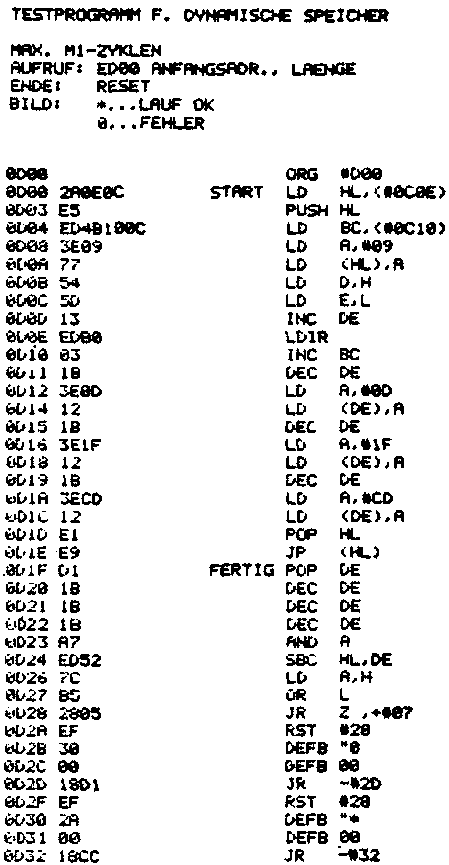

Nascom Journal |
0/80 |
1. Was ist das ?
Wer seine Geräte selbst baut, wird den Unterschied zwischen „systematischen“ und „sporadischen“ Fehlern zu Genüge kennen. Ein systematischer Fehler ist in einem Gerät vorhanden und tritt dann immer in einem bestimmten Betriebszustand auf. Man hat seine Auswirkungen so immer in gleicher Weise vor Augen. Die Fehlersuche ist oft vergleichsweise einfach und vor allem überschaubar zu planen.
Die eigentliche Tücke liegt in den sporadischen Fehlern, die nur manchmal auftreten und deswegen so schwer zu finden sind.
Sporadische Speicherfehler sind solche „Dreckeffekte“. Sie treten bei etwa 10% der Nascom-Speicherkarten auf. Das wirkt sich z.B. so aus, daß man einige Speicherzellen mit einem Wert beschreibt. Dann schaut man die vorher geschriebenen Speicherzelleninhalte an und muß feststellen, daß sie sich verändert haben. Typisch ist auch, daß man mithilfe des M-Befehles jede Speicherzelle beschreiben und lesen kann, ohne daß etwas passiert. Die Inhalte stimmen immer. Füllt man den Speicher aber z.B. mithilfe eines COPY-Befehles (C), so enthalten einige Speicherzellen hinterher falsche Werte. Angesichts solcher Erfahrungen packt manchen Zeitgenossen das kalte Grausen und er fragt sich:
2. Wie identifiziert man sporadische Speicherfehler ?
Das braucht garnicht so einfach zu sein, ist aber immer machbar. Oftmals laufen die beiden Speichertest, die im Aufbauhandbuch beschrieben sind, einwandfrei. Meist funktioniert auch das TINY BASIC ohne Probleme. Sowohl die Speichertests, als auch das TINY BASIC übertragen aber nur Bytes in den Speicher und holen Werte aus dem Speicher.
Hat man nun aber ein Programm, das in dem verdächtigen Bereich liegt, so kann sich ein Fehlerverhalten zeigen. Denn es wird beim Programmablauf bei jedem Op-Code -Fetch ein M1-Zyklus ausgeführt. Der zeitliche Ablauf für einen solchen Op-Code – Fetch ist aber sehr viel störempfindlicher als das simple Ein/Auslagern von Bytes im Speicher. Deshalb können Sie zum Speichertest auch sehr gut große Programme verwenden, die ins RAM geladen werden. Gut geeignet sind der Cassetten-Assembler ZEAP oder das 8k TAPE BASIC. Ebenso gut geeignet ist das nachfolgend angegebene Programm von Uwe Wurditsch, Überlingen:

Das Programm wird bei Adresse 0D00 gestartet. Als Parameter muß man angeben, ab welcher Adresse getestet werden soll und wie lange der getestete Block sein soll. Beide Eingaben erfolgen wie gewohnt hexadezimal. Will man z.B. einen Block von 8k testen, der bei Adresse 1000H beginnt, so gibt man an:
E0D00 1000 2000 nl
„nl“ steht für Newline.
| Seite 7 von 12 |
|---|